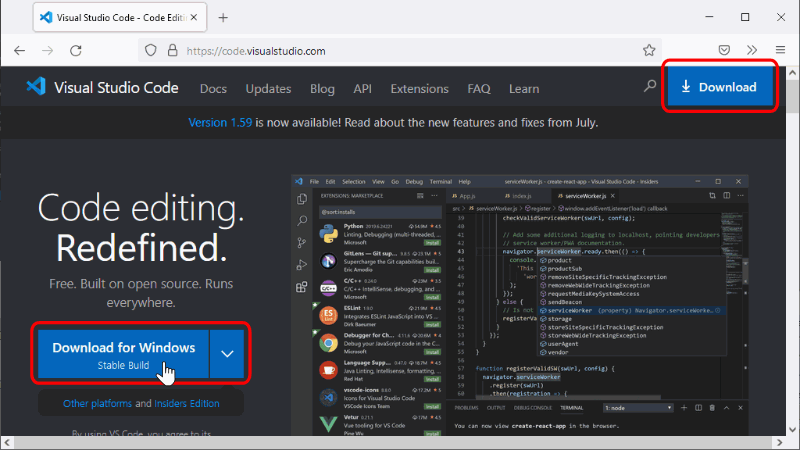
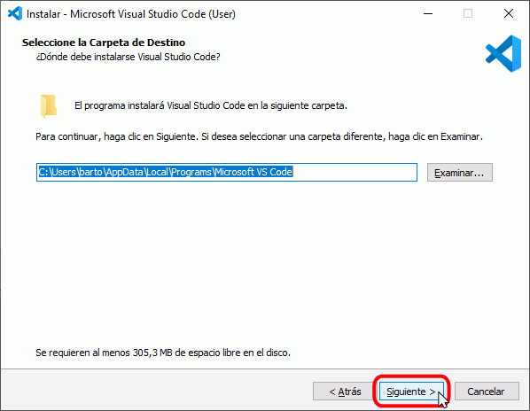
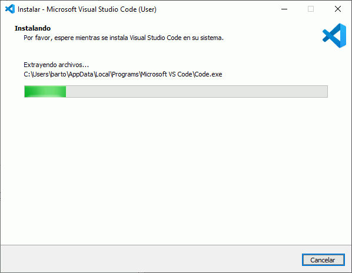
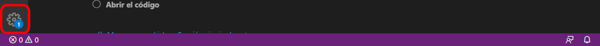
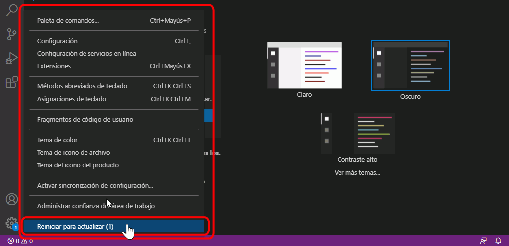

La página oficial de Visual Studio Code es https://code.visualstudio.com/. Desde la página principal se puede descargar la última versión estable (mediante el botón azul grande situado a la izquierda) o acceder a la página de descargas (mediante el botón azul más pequeño situado arriba a la derecha):

Desde la página de descargas se pueden descargar las versiones para diferentes sistemas operativos (32 / 64 bits, Windows / GNU/Linux / Mac). En Windows hay además disponibles versiones System installer, que se instalan en la carpeta de Archivos de programa, y versiones User installer, que se instalan en la carpeta de usuario. Desde el verano de 2018, Microsoft recomienda la versión User installer.
Nota: Las capturas siguientes corresponden a Visual Studio Code 1.66 (User installer) en Windows 10 de 64 bits. Versiones posteriores pueden ser ligeramente diferentes.
Haga doble clic sobre el instalador de Visual Studio Code para poner en marcha el asistente de instalación.
La primera pantalla exige aceptar la licencia de Visual Studio Code para continuar la instalación:
La segunda pantalla permite elegir el directorio de instalación (por tratarse de la versión User installer, el directorio de instalación está en la carpeta de usuario, no en Archivos de programa):

La tercera pantalla permite elegir el nombre de la carpeta del menú de inicio:
La cuarta pantalla permite elegir algunas tareas adicionales tras la instalación. Personalmente, aconsejo marcar las casillas "Agregar la acción ...":
Finalmente se muestran las opciones elegidas en las pantallas anteriores. Para iniciar la instalación, haga clic en Instalar.
A continuación, se instalará Visual Studio Code.

Una vez completada la instalación, se muestra la pantalla final. Si va a utilizar Git [⚠️: No disponible todavía] con Visual Studio Code, desmarque la casilla "Ejecutar Visual Studio Code", haga clic en Finalizar e instale Git [⚠️: No disponible todavía].
Primera ejecución
La primera vez que se abre Visual Studio Code tras la instalación, se muestra una página de bienvenida al programa:
Nota: Al detectar la presencia o ausencia de algunas aplicaciones (por ejemplo Git o Docker), Visual Studio Code se pueden mostrar distintos avisos.
Actualizar Visual Studio Code
Visual Studio Code se actualiza automáticamente cada vez que se publica una nueva versión. Visual Studio Code muestra un aviso cuando la actualización se ha descargado y podemos aplicar la actualización inmediatamente, como se muestra en las capturas de pantalla siguientes. En cualquier caso, hayamos pedido o no aplicar la actualización, si cerramos Visual Studio Code, la actualización se aplicará al volver a abrirlo.
Nota: Las capturas siguientes corresponden a la actualización de Visual Studio Code 1.59 a Visual Studio Code 1.59.1 en Windows 10 de 64 bits. Versiones posteriores pueden ser ligeramente diferentes.
Cuando hay una actualización disponible, Visual Studio Code muestra un número en el icono de la rueda dentada situado en la parte inferior izquierda:

Haga clic en el icono de la rueda dentada y elija la opción "Reiniciar para actualizar":

Visual Studio Code instalará la actualización:
Al reiniciarse, se mostrarán en una nueva pestaña las notas de la versión instalada y el icono de la rueda dentada ya no mostrará el número: